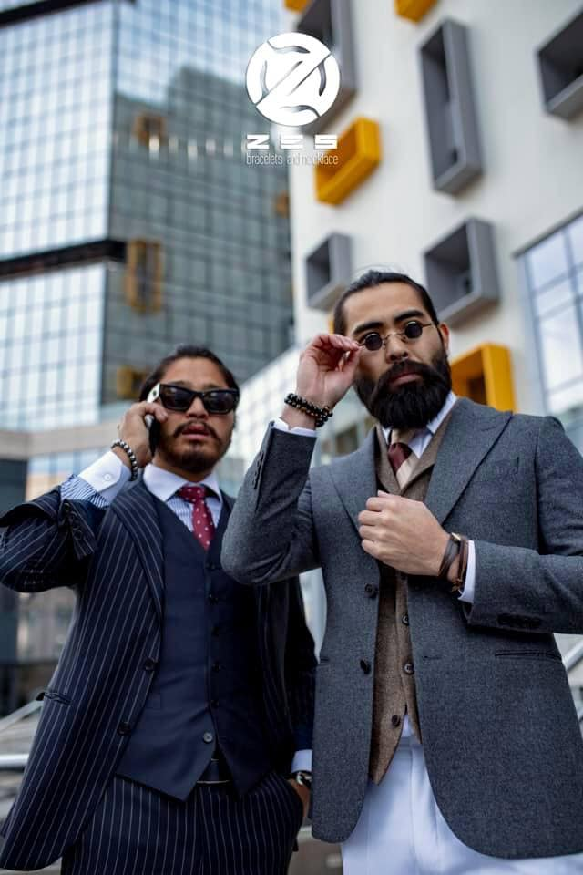

The 5 Mongolian Fashion Designers you should know
Michel & Amazonka
Since receiving the Best Designer Pret-a-Porter award at the acclaimed Fashion Asia Awards, Michel & Amazonka have grown to become one of the best young designer labels in the country. The creative minds and creators behind the labels are two sisters, Yanjindulam and Nyamkhand Choigaalaa. Their capsule collection was even featured on the grand finale episode of the wildly popular Mongolia's Next Top Model.
The design duo is known for reinterpreting classic European styles and cuts with traditional Mongolian embellishments. You can expect luxury cashmere coats and skirts embroidered with patterns inspired by 18th-century Mongolian nomadic designs. In addition, Michel & Amazonka are also partnered with Arig Bank for a corporate social responsibility programme, where the proceeds from their line eco-friendly bags are donated to causes dedicated to supporting vulnerable Mongolian children.
White Comma
In 2014, the creative team behind Sor Ganbold Baltis and Altangadas Bayarsaikhan (who once helmed GOYO) launched White Comma. The duo were inspired following a design trip to Tokyo, and consequently proceeded to debut their first collection of clutches made from vintage kimono fabric, Mongolian leather and Chinese silk. Talk about a (literal) intercultural weaving!
It didn't take long for the line to become an instant hit in the Ulaanbaatar fashion and social scene, prompting the label to expand their collection to include apparels. Their pieces still retain the multifarious cultural influences that made their first collection a success, featuring classic European cuts created using traditional Mongolian materials and Japanese embroidery and beading techniques. True to its 'Made in Mongolia' spirit, the label proudly uses strictly Mongolian-made wool, leather, cashmere and suede in both their accessories and apparel.

O Couture
One of the highly acclaimed designers in Asia's fashion industry D.Otgonjargal has presented the O Couture High Fashion Show 2016 at the Corporate Hotel Convention Hall. Her designs have incorporated the feminine lines and hand made accessories to define the beauty of a woman.
Designer defines her outfits as classic, elegant and neat. The main focus in her designs were the fine lines and the accessories.
Atoz
Atoz is a combination of two designers. It is a pleasure to inform you that Mongolia's national production begins with a new Pret-a-porter fashion line.
"Nature always gives the power to challenge and develop. We will see, hear, and feel how rich and it contains. What would be the thing you want to find a woman who is going to quest and travel in the mountains? Her wish is not measured by time, and "Atoz" will be forward with her all the time."
Kapriza Handicraft
All products are made by hand based in Ulaanbaatar -accessories -beaded jewelries -magnets & planning boards.

Zes Accessories
Men's jewelry zes brand The best choice to decorate your bracelet. Designer : Zes-Erdene Tsend
